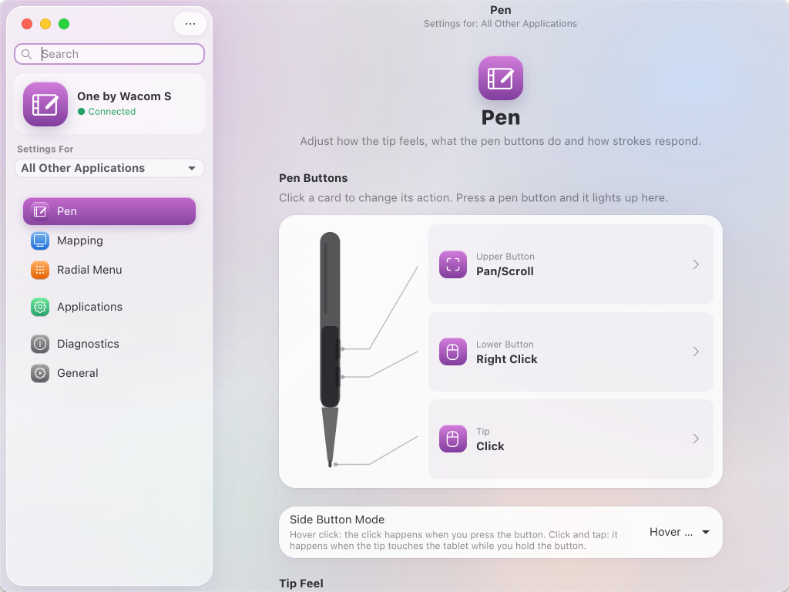
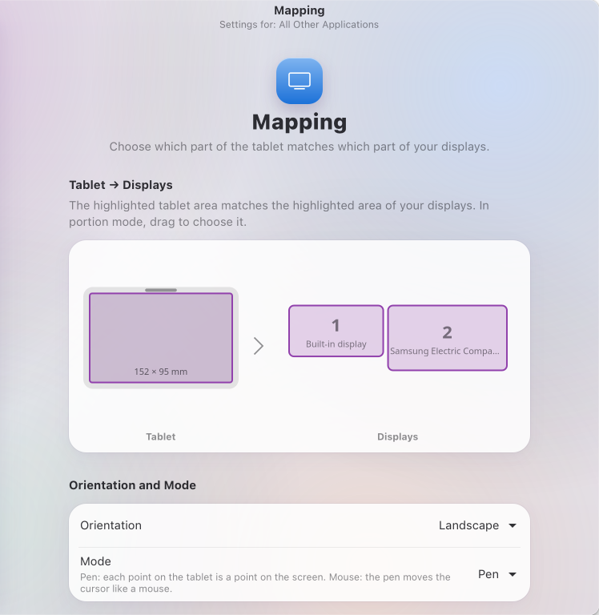
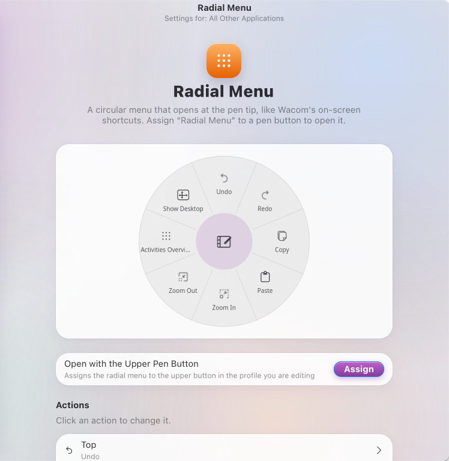
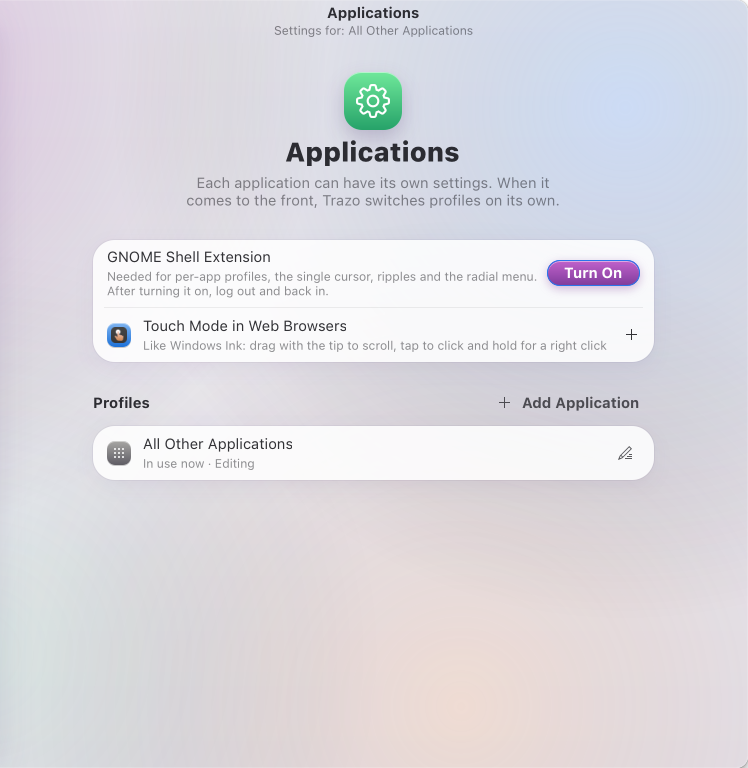
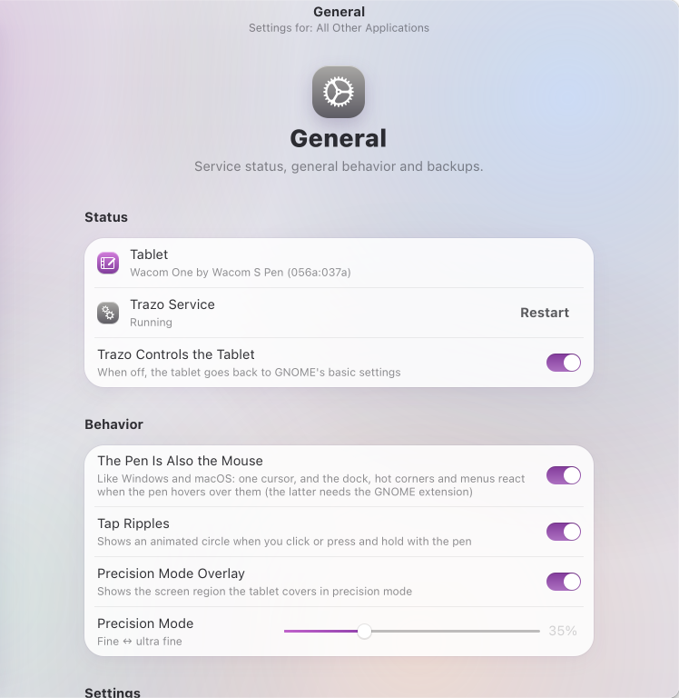

Your Wacom tablet, finally at home on Linux.
Everything Wacom Center does on Windows and macOS — tip feel, pen buttons, mapping, per-app profiles, touch mode and a radial menu — in a native app that looks like it belongs on your Mac-style desktop.

And a few things it only does on Windows, like touch mode and tap ripples.
Soft to firm, click threshold, maximum pressure and a curve you shape by dragging — with a live test area.
Any action on any button: clicks, keystrokes, modifiers, pan/scroll, undo, zoom, precision mode and more.
All displays, one display or any portion. Pick the tablet area, rotate it, force proportions or define it with the pen.
Different settings for Krita, Xournal++ or your browser. Trazo switches as soon as the app comes to the front.
Like Windows Ink: drag to scroll with momentum, tap to click, press and hold for a right click.
A glass menu that opens at the pen tip with eight actions of your choice, like Wacom's on-screen shortcuts.
The pen is also the mouse: one cursor, and the dock, hot corners and menus react when the pen hovers.
Live pressure, position, buttons and report rate — the same data Wacom Center shows.
A few friendly questions on first launch: your hand, your buttons, your displays. Done.
A System Settings layout with Liquid Glass, built with GTK 4 and libadwaita. It follows your theme, in light and dark.




For Ubuntu, Debian and other GNOME desktops with Python 3, GTK 4 and libadwaita.
From the folder where you downloaded it:
sudo apt install ./trazo_0.1.0_all.debThat turns on the service and the GNOME extension. Then open Trazo from the app grid and follow the Setup Assistant.
Download trazo-0.1.0.tar.gz, extract it and run the installer as your normal user. It asks for your password once, to grant access to the tablet.
tar xf trazo-0.1.0.tar.gz && cd trazo-0.1.0 && ./install.shEvery release lists SHA-256 checksums. All releases
The same three layers as the official driver — all open source.
The settings window. It saves your profiles and talks to the service over D-Bus.
A user service that takes exclusive control of the pen, applies the curve, area, buttons and profile, and sends the result to GNOME through a virtual pen, mouse and keyboard.
The kernel's own wacom driver talks to the hardware. A small extension reports the focused app and draws the cursor, ripples and radial menu.
Trazo is built for Wacom pen tablets handled by the Linux wacom driver, and it is tested with the One by Wacom S (CTL-472). Other Wacom pen tablets should work; ExpressKeys and touch rings are not supported yet.
Yes. Trazo is built and tested for GNOME 45 or newer on Wayland: it reads your display layout and tablet settings from GNOME, and its extension powers per-app profiles, the single cursor, ripples and the radial menu. Other desktops are not supported yet.
Trazo installs one udev rule that lets the user of the active session read Wacom tablets and create virtual input devices (uinput) — the same access OpenTabletDriver needs. It never runs as root. The code is open for anyone to review.
With the package: sudo apt remove trazo. With the per-user install: run ./uninstall.sh from the extracted folder. Your tablet goes back to GNOME's own settings.
No. Trazo is an independent open source project and is not affiliated with or endorsed by Wacom. Wacom is a trademark of Wacom Co., Ltd.